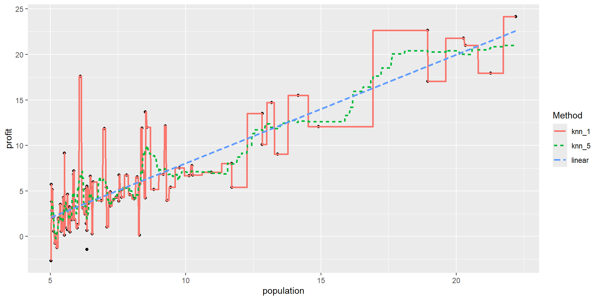

library(tidyverse)
library(tidymodels)
library(knitr)
library(readODS)
library(modeldata) # contains ames dataset
tidymodels_prefer()
mlr_model <- linear_reg() |>
set_engine("lm")MAT-427: Data Splitting + KNN
Computational Setup
Comparing Models: Data Splitting
- Split
amesdata set into two parts- Training set: randomly selected proportion \(p\) (typically 50-90%) of data used for fitting model
- Test set: randomly selected proportion \(1-p\) of data used for estimating prediction error
- If comparing A LOT of models, split into three parts to prevent information leakage
- Training set: randomly selected proportion \(p\) (typically 50-90%) of data used for fitting model
- Validation set: randomly selected proportion \(q\) (typically 20-30%) of data used to choosing tuning parameters
- Test set: randomly selected proportion \(1-p-q\) of data used for estimating prediction error
- Idea: use data your model hasn’t seen to get more accurate estimate of error and prevent overfitting
Comparing Models: Data Splitting with tidymodels
set.seed(427) # Why?
ames_split <- initial_split(ames, prop = 0.70, strata = Sale_Price) # initialize 70/30
ames_split<Training/Testing/Total>
<2049/881/2930>ames_train <- training(ames_split) # get training data
ames_test <- testing(ames_split) # get test datastratanot necessary but good practicestratawill use stratified sampling on the variable you specify (very little downside)
Linear Regression: Comparing Models
- Let’s create three models with
Sale_Priceas the response:- fit1: a linear regression model with
Bedroom_AbvGras the only predictor - fit2: a linear regression model with
Gr_Liv_Areaas the only predictor - fit3 (similar to model in previous slides): a multiple regression model with
Gr_Liv_AreaandBedroom_AbvGras predictors - fit4: super flexible model which fits a 10th degree polynomial to
Gr_Liv_Areaand a 2nd degree polynomial toBedroom_AbvGr
- fit1: a linear regression model with
fit1 <- mlr_model |> fit(Sale_Price ~ Bedroom_AbvGr, data = ames_train) # Use only training set
fit2 <- mlr_model |> fit(Sale_Price ~ Gr_Liv_Area, data = ames_train)
fit3 <- mlr_model |> fit(Sale_Price ~ Gr_Liv_Area + Bedroom_AbvGr, data = ames_train)
fit4 <- mlr_model |> fit(Sale_Price ~ poly(Gr_Liv_Area, degree = 10) + poly(Bedroom_AbvGr, degree = 2), data = ames_train)Computing MSE
# Fit 1
fit1_train_mse <- mean((ames_train$Sale_Price - predict(fit1, new_data = ames_train)$.pred)^2)
fit1_test_mse <- mean((ames_test$Sale_Price - predict(fit1, new_data = ames_test)$.pred)^2)
# Fit 2
fit2_train_mse <- mean((ames_train$Sale_Price - predict(fit2, new_data = ames_train)$.pred)^2)
fit2_test_mse <- mean((ames_test$Sale_Price - predict(fit2, new_data = ames_test)$.pred)^2)
# Fit
fit3_train_mse <- mean((ames_train$Sale_Price - predict(fit3, , new_data = ames_train)$.pred)^2)
fit3_test_mse <- mean((ames_test$Sale_Price - predict(fit3, new_data = ames_test)$.pred)^2)
# Fit
fit4_train_mse <- mean((ames_train$Sale_Price - predict(fit4, , new_data = ames_train)$.pred)^2)
fit4_test_mse <- mean((ames_test$Sale_Price - predict(fit4, new_data = ames_test)$.pred)^2)Question
Without looking at the numbers
- Do we know which of the following is the smallest:
fit1_train_mse,fit2_train_mse,fit3_train_mse,fit4_train_mse? Yes,fit4_train_mse - Do we know which of the following is the smallest:
fit1_test_mse,fit2_test_mse,fit3_test_mse,fit4_test_mse? No
Choosing a Model
# Training Errors
c(fit1_train_mse, fit2_train_mse,
fit3_train_mse, fit4_train_mse)[1] 6213135279 3188099910 2781293767 2472424544which.min(c(fit1_train_mse, fit2_train_mse,
fit3_train_mse, fit4_train_mse))[1] 4# test Errors
c(fit1_test_mse, fit2_test_mse,
fit3_test_mse, fit4_test_mse)[1] 6.329031e+09 3.203895e+09 2.732389e+09 2.726084e+12which.min(c(fit1_test_mse, fit2_test_mse,
fit3_test_mse, fit4_test_mse))[1] 3fit4has the lowest training MSE (to be expected)fit3has the lowest test MSE- We would choose
fit3
- We would choose
- Anything else interesting we see?
K-Nearest Neighbors
Regression: Conditional Averaging
Restaurant Outlets Profit dataset

What is a good value of \(\hat{f}(x)\) (expected profit), say at \(x=6\)?
A possible choice is the average of the observed responses at \(x=6\). But we may not observe responses for certain \(x\) values.
K-Nearest Neighbors (KNN) Regression
- Non-parametric approach
- Formally: Given a value for \(K\) and a test data point \(x_0\), \[\hat{f}(x_0)=\dfrac{1}{K} \sum_{x_i \in \mathcal{N}_0} y_i=\text{Average} \ \left(y_i \ \text{for all} \ i:\ x_i \in \mathcal{N}_0\right) \] where \(\mathcal{N}_0\) is the set of the \(K\) training observations closest to \(x_0\).
- Informally, average together the \(K\) “closest” observations in your training set
- “Closeness”: usually use the Euclidean metric to measure distance
- Euclidean distance between \(\mathbf{X}_i=(x_{i1}, x_{i2}, \ldots, x_{ip})\) and \(\mathbf{x}_j=(x_{j1}, x_{j2}, \ldots, x_{jp})\): \[||\mathbf{x}_i-\mathbf{x}_j||_2 = \sqrt{(x_{i1}-x_{j1})^2 + (x_{i2}-x_{j2})^2 + \ldots + (x_{ip}-x_{jp })^2}\]
KNN Regression (single predictor): Fit
\(K=1\)
knnfit1 <- nearest_neighbor(neighbors = 1) |>
set_engine("kknn") |>
set_mode("regression") |>
fit(profit ~ population, data = outlets) # 1-nn regression
predict(knnfit1, new_data = tibble(population = 6)) |> kable() # 1-nn prediction| .pred |
|---|
| 0.92695 |
\(K=5\)
knnfit5 <- nearest_neighbor(neighbors = 5) |>
set_engine("kknn") |>
set_mode("regression") |>
fit(profit ~ population, data = outlets) # 1-nn regression
predict(knnfit5, new_data = tibble(population = 6)) |> kable() # 1-nn prediction| .pred |
|---|
| 4.113736 |
Regression Methods: Comparison

Question!!!
As \(K\) in KNN regression increases:
- the flexibility of the fit (decreases /increases)
- the bias of the fit (decreases/increases )
- the variance of the fit (decreases/increases)
K-Nearest Neighbors Regression (multiple predictors)
- Let’s look at the
amesdata
ames |>
select(Sale_Price, Gr_Liv_Area, Bedroom_AbvGr) |>
head() |>
kable()| Sale_Price | Gr_Liv_Area | Bedroom_AbvGr |
|---|---|---|
| 215000 | 1656 | 3 |
| 105000 | 896 | 2 |
| 172000 | 1329 | 3 |
| 244000 | 2110 | 3 |
| 189900 | 1629 | 3 |
| 195500 | 1604 | 3 |
- Should 1 square foot count the same as 1 bedroom?
- Need to center and scale (freq. just say scale)
- subtract mean from each predictor
- divide by standard deviation of each predictor
- compares apples-to-apples
Scaling in R
# scale predictors
ames_scaled <- tibble(size_scaled = scale(ames$Gr_Liv_Area),
num_bedrooms_scaled = scale(ames$Bedroom_AbvGr),
price = ames$Sale_Price)
head(ames_scaled) |> kable() # first six observations| size_scaled | num_bedrooms_scaled | price |
|---|---|---|
| 0.3092123 | 0.1760642 | 215000 |
| -1.1942232 | -1.0320576 | 105000 |
| -0.3376606 | 0.1760642 | 172000 |
| 1.2073172 | 0.1760642 | 244000 |
| 0.2558008 | 0.1760642 | 189900 |
| 0.2063456 | 0.1760642 | 195500 |
Question…
- What about the training and test sets?
- Need to scale BOTH sets based on the mean and standard deviation of the training set…
- Discussion: Why?
- Discussion: Why don’t I need to center and scale
Sale_Price?
Scaling Revisited
ames_train_scaled <- tibble(size_scaled = scale(ames_train$Gr_Liv_Area),
num_bedrooms_scaled = scale(ames_train$Bedroom_AbvGr),
price = ames_train$Sale_Price)
ames_test_scaled <- tibble(size_scaled = (ames_test$Gr_Liv_Area - mean(ames_train$Gr_Liv_Area)/sd(ames_train$Gr_Liv_Area)),
num_bedrooms_scaled = (ames_test$Bedroom_AbvGr - mean(ames_train$Bedroom_AbvGr))/sd(ames_train$Bedroom_AbvGr),
price = ames_test$Sale_Price)- Next time: using
recipe’s intidymodelsto simplify this process
K-Nearest Neighbors Regression (multiple predictors)
knnfit10 <- nearest_neighbor(neighbors = 10) |> # 10-nn regression
set_engine("kknn") |>
set_mode("regression") |>
fit(price ~ size_scaled + num_bedrooms_scaled, data = ames_train_scaled)- Test Point:
Gr_Liv_area= 2000 square feet, andBedroom_AbvGr= 3, then
# obtain 10-nn prediction
predict(knnfit10, new_data = tibble(size_scaled = (2000 - mean(ames_train$Gr_Liv_Area))/sd(ames_train$Gr_Liv_Area),
num_bedrooms_scaled = (3 - mean(ames_train$Bedroom_AbvGr))/sd(ames_train$Bedroom_AbvGr)))# A tibble: 1 × 1
.pred
<dbl>
1 256380